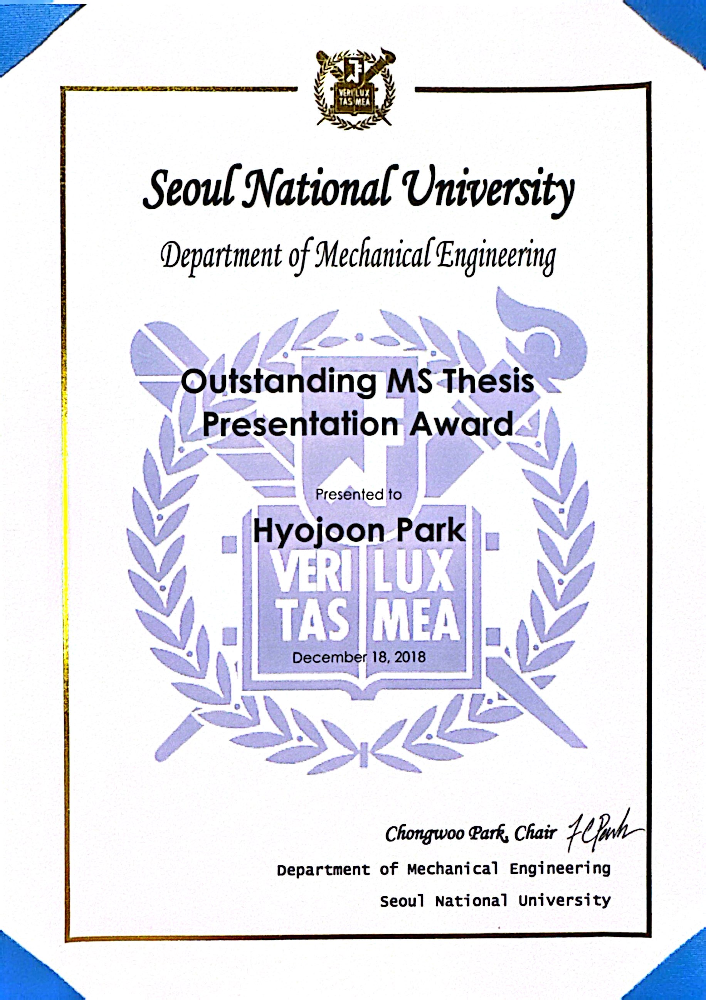

-

Ph.D. Candidate, Computer Sciences
University of Wisconsin–Madison
Advisor: Prof. Eftychios Sifakis, Co-Advisor: Prof. Kevin Eliceiri
-
M.S., Mechanical Engineering
Advisor: Prof. Dongjun Lee
Received Outstanding MS Thesis Presentation Award
MS thesis | short paper | short video | long video
Lab meeting presentation (Topic: Data association techniques in multiple object tracking) -
B.S., Mechanical Engineering

B.S. Exchange Student, Mechanical Engineering